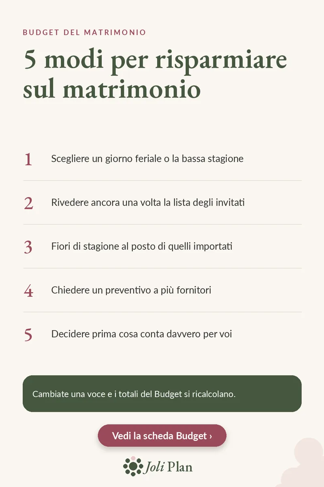

Budget
Risparmiare sul matrimonio: 5 modi che funzionano
Aggiornato il 04/11/2026
Risparmiare su un matrimonio raramente significa rinunciare a qualcosa. Di solito significa decidere dove i soldi contano di più e ricontrollare ogni voce. Ecco cinque modi per cominciare.
Vedi il planner del matrimonio su Etsy ›

I 5 modi
- Scegliere un giorno feriale o la bassa stagione.
- Rivedere ancora una volta la lista degli invitati.
- Fiori di stagione al posto di quelli importati.
- Chiedere un preventivo a più fornitori.
- Decidere prima cosa conta davvero per voi.
Perché proprio questi cinque
Il catering è la voce più pesante del budget. Nel nostro esempio da 28.000 € vale 7.350 €, circa un quarto del totale. Un giorno feriale o la bassa stagione può cambiare la parte della location, e una lista di invitati più corta cambia quella del catering, perché il catering segue il numero dei coperti.
Chiedere più preventivi permette di confrontare prima di decidere, e i fiori di stagione aiutano a contenere la voce allestimenti. Decidere prima cosa conta davvero per voi rende più facili tutte le altre scelte.
Tenete i totali sotto controllo
Qualunque cosa cambiate, tenete tutte le voci in una sola pagina per vedere cosa è già assegnato, e lasciate una voce «imprevisti» di circa il 5% per le piccole sorprese.
Domande frequenti
Dove si risparmia di più di solito?
Nel nostro esempio il catering vale circa un quarto del totale, e segue il numero dei coperti: per questo la lista degli invitati è il primo punto da rivedere.
Perché decidere prima le priorità?
Per spendere su ciò che conta davvero per voi e ridurre il resto.